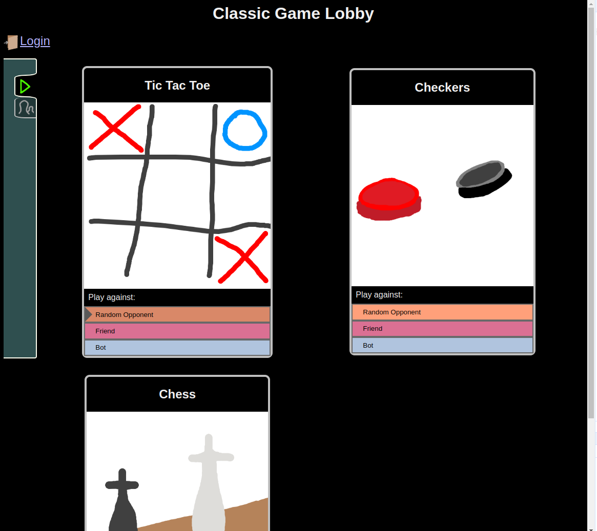

About me
Hi, my name is Sam Liepke and I'm from Oswego, NY. I'm currently expecting to finish my BS in Computational Mathematics in the Spring of 2025 at RIT.
I enjoy going on walks, listening to music, and trying different plant based foods.
Projects
Maze Game
 Complete
Complete
Uses: HTML, CSS, JS
 In this simple single-player game, you can either create a maze and watch the computer solve it using breadth first search, or you can let the computer create a maze for you to solve.
In this simple single-player game, you can either create a maze and watch the computer solve it using breadth first search, or you can let the computer create a maze for you to solve.
Classic Game Lobby
In progress
Uses: HTML, CSS, JS, node.js
An accessible web app allowing you to play classic games such as tic-tac-toe, checkers, chess, and hangman with anyone you'd like to over the web.
Writing
Public Policy Proposal
(PDF, 120KB)
Group project for Communication (Comm 253) at RIT, which aimed to address the impact of, and local policy solutions to, car dependency in Henrietta. Summarizes various research regarding effects of car dependency on human safety and health, child development, environmental pollution, and local economies.
Time flies: Comparing Completion Times of 3 Plane Disembarking Strategies
(PDF, 399KB)
What is the fastest way to deboard the passengers of an airplane? Do you tell everyone to deboard all at once? Or maybe call people off one row at a time? This independent mathematical modeling project aims to find the answer using a simulation written in Python, and investigates how the passengers' number of carry-ons and likelihood of noncompliance to your strategy affects the different strategies' performances. Final project for Mathematical Modeling (Math 421) at RIT.